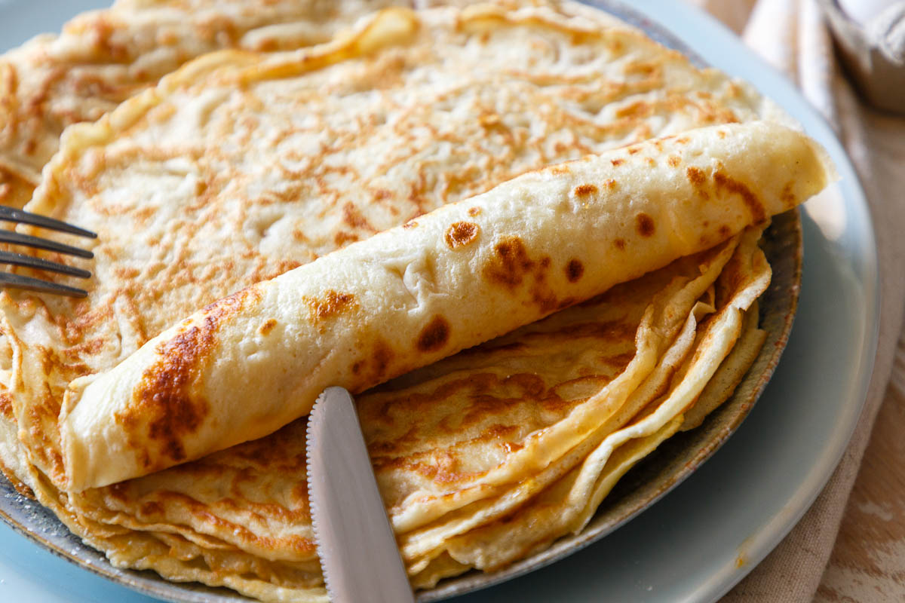

Pancakes

Description
Yammi pancakes, made in a wink
Ingredients for about 6 pancakes
- 250g flower
- 250ml milk
- 2x eggs
- 50ml sparkling water
- bit of suggar and salt
Steps
- mix folwer and milk
- add the eggs
- add sparkling water
- finally add bit of suggar and salt
- let it rest for 10 mins
- Ready for action!